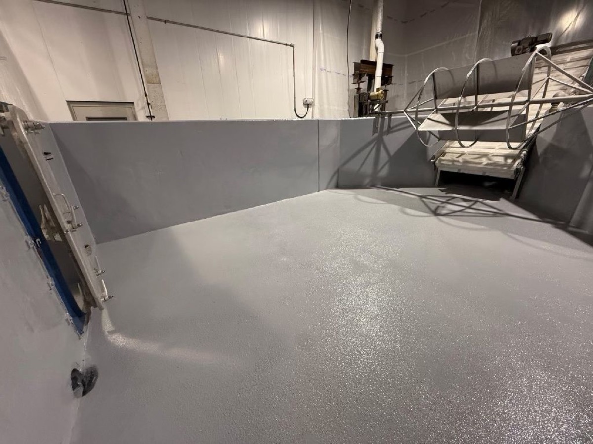
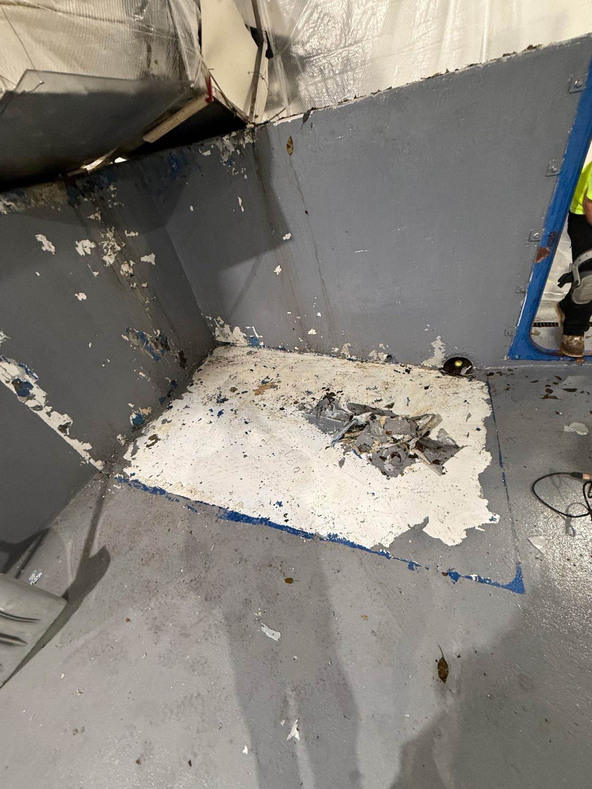
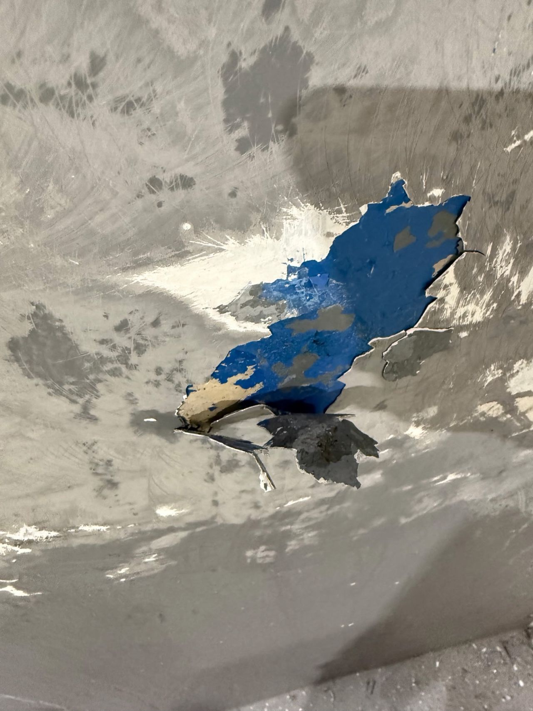
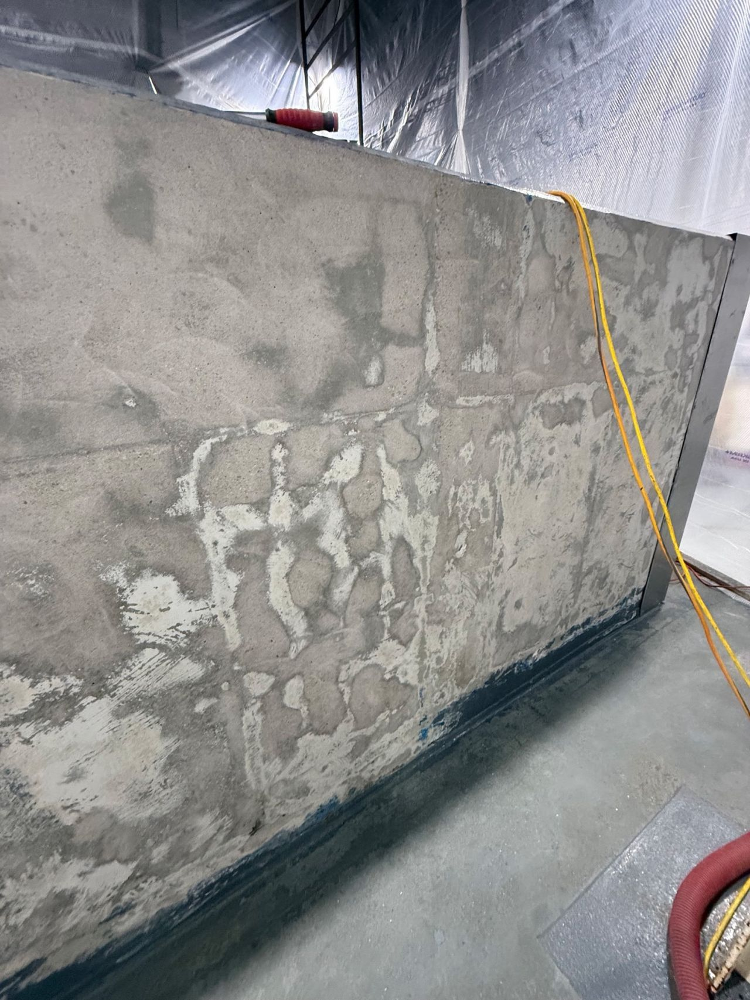

A repeat customer called us with an emergency inside a food plant. One of three wash tanks had years of failed coatings built up on its concrete surfaces. The deadline was tight, the surrounding plant had to keep running, and the repair needed to address what was underneath instead of adding one more layer on top.
When we opened the tank, the history was easy to read. Gray coating covered white coating, white covered blue, and those layers were peeling away from each other. Each earlier failure had been hidden by another coat. The surface looked patched, but the weak material was still there.

The Layers Told the Story
Coatings do not fail in isolation. If a new layer is placed over material that is already loose, the new work is bonded to the old failure instead of the concrete below it. The tank may look better for a while, but the underlying problem is still waiting.
That is exactly what the demolition exposed here. Large sections were already peeling, and the broken edges showed several different colors underneath. The debris on the tank floor was not one coating coming off. It was a stack of past repairs separating together.


The right repair started with a simple rule: do not bond new material to something that is already letting go. Our crew tore out the failed system and kept going until the tank was back to sound, bare concrete.
Back to Bare Concrete, Behind Containment
This was active food manufacturing space, so controlling the work area mattered as much as removing the failed coating. The crew worked weekends behind plastic containment. That separated the demolition and preparation work from the operating plant and allowed production to continue while the tank was repaired.

Once the unsound layers were gone, the crew could see the actual condition of the concrete, prepare it properly, and recoat a dependable surface. That sequence is less convenient than painting over the problem, but it is the difference between hiding a failure and fixing it.
The plant's maintenance manager summed up the job well: "It was refreshing to have a contractor on site that required very little supervision and consistently demonstrated a strong understanding of the work being performed." On an emergency food plant repair, that is the standard. Show up prepared, control the work area, understand the process, and give the plant a finished result without creating another problem for its team.